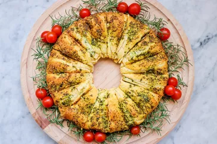

Appetizer

Cheesy Pesto Roll Wreath (Christmas Wreath Appetizer)
This savory appetizer is great to eat as a bite on its own or spread onto crackers. You can add fresh rosemary sprigs and cherry tomatoes to make the wreath even more festive.
Ingredients
- 2 (8 ounce) packages refrigerated crescent rolls
- 1 (8 ounce) package cream cheese, softened
- 1 cup shredded mozzarella cheese
- ½ cup basil pesto, divided
- 12 sprigs fresh rosemary, or to taste
- 1 pint cherry tomatoes, or to taste
Back to Home